Software&Network:2
Week1
9/27-10/9 アルゴリズム・データストラクチャー
○Scratchを使ってすごろくのマスを作る○
作業工程
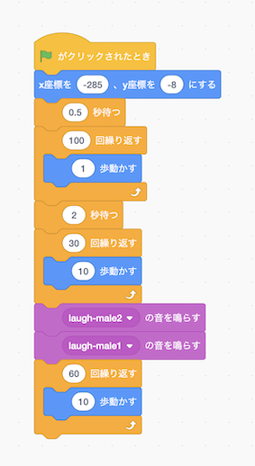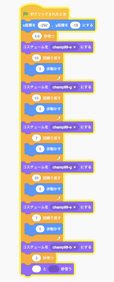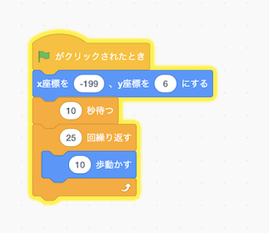
Bus Human Character
「Bus」「Human」「Sign」「Character」のそれぞれに別のプログラムをして作成した。
できたものがこちら 👉 scratch
○個人の感想○
今回「scratch」でプログラミングを体験したが、想像していたよりも手間がかかった。中でも特に時間の操作が難しかった。登場させるオブジェクトを増やせば増やすほどそれぞれの時間を少しずつ変えなければいけないので、
この部分に関して言えばあまり直感的に操作することはできなかった。
また、同じような命令文を何回も繰り返してしまい、とても見にくくなってしまったので、工夫が必要だと思う。
このようなことから「scratch」はどちらかといえば画面上のものを動かすよりも、実際に現実にあるものの方が
プログラムをしやすいのではないかと感じた。
以前に買った小さなドローンがあるのだが、「scratch」で動かせるようなので、挑戦してみたい。
Week2
11/8-21 クリエイティブコーディング
○p5.jsを使ってクリエイティブコーディング○
作業工程
○家紋を作る○
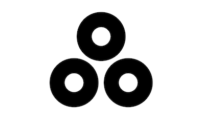
Openprocessing
右の画像の説明
1. 初めの１度だけ実行されるもの2. キャンパスの大きさ指定
3. 背景の色指定
4. 濃度の設定
5. 真ん中上の黒丸の位置
6. 左下の黒丸の位置
7. 右下の黒丸の位置
8.
9.
10. 繰り返し実行されるもの
11. 白丸の濃度
12. 真ん中上の白丸の位置
13. 左下の白丸の位置
14. 右下の白丸の位置
15.
そして完成したものをopenprocessingにアップロードした。
○気づき、感想○
今までパソコンで絵を描くというと、ペンタブを使ったりillustratorを使わなければいけないと思っていたが、このようなコンピュータプログラミングでも描けるとは知らなかった。実際に使ってみたが普通に紙に書くような感じで直感的に
操作することは出来ず、数字の微調整が必要だったり、色の細かな指定が必要になったりして慣れるまでに時間がかかった。
しかし、数字で指定する分正確な図形を描けるので、完成した幾何学模様をとても美しく感じた。
ロゴマークは単純化して表すことも多いので今回使用したp5.jsが使えるのではないかと思う。
用途に合わせて適切なソフトウェアを使っていきたい。
Week3
12/13-19 デジタルプロトタイピング
○Fusion360で学校に設置したいものをプロトタイピング○
作成するにあたって、小中高の経験をもとにアイデアを出した。その中で出てきたのがカーテンだった。
カーテンは夏の日差しが強い時などに使用するが、風を通すために窓を開けるとバタついて邪魔になる。
そこで、風は通すが日差しは通さない良いとこどりのカーテンを考えることにした。
↙︎太陽から見たカーテン 全体像↘︎
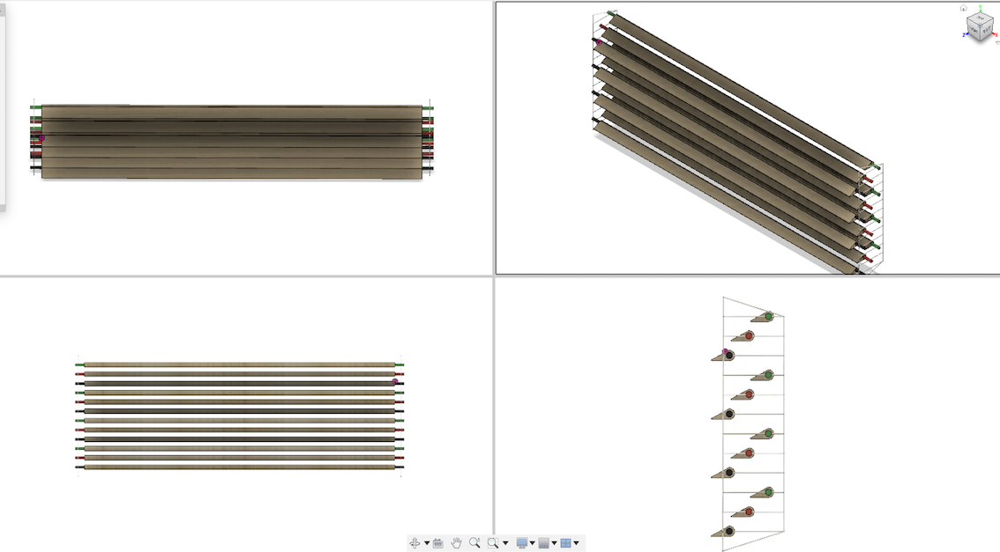
↖︎部屋の中から見たカーテン 横から見た図↗︎
☝︎完成したもの☝︎
作業工程
①まず、三角形と半円を合わせた形のもの（スラット）を３つ作り１セットとし、それを４個コピーする。
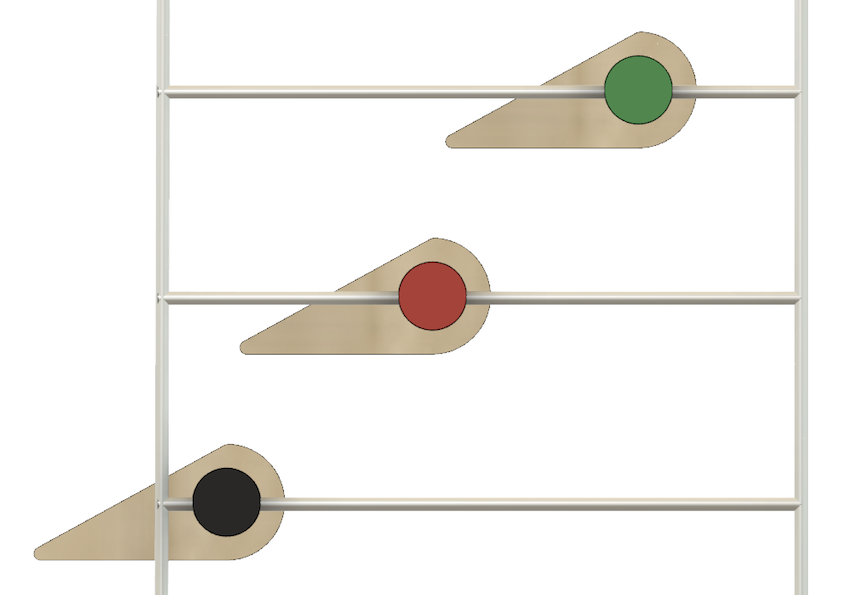
②次にガイドレールを作り、そこに合わせて配置する。
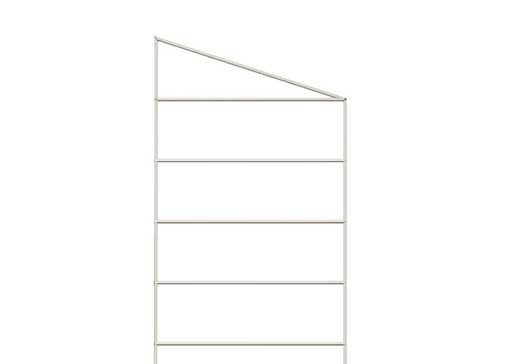
○カーテンの詳細○
⒈スラットそれぞれの斜めの部分は28.7度で固定している。これは太陽光発電と同じ角度になっている。
太陽の光に当たる表面積が大きければ大きいほど、光を遮ることができると考えたからだ。
⒉それぞれのスラットは木でできている。これは小学校に設置することを想定して、危なくないように。
⒊スラットの角度は固定しており、レールの上を前後に動くだけにしている。
角度を変えてしまうと、風が通りにくくなると考えたため。
しかし、日光の角度によってはやはり光が入ってしまうので、たくさん作って検証した。
❶１枚１枚のスラットの面積を大きくしたパターン↓
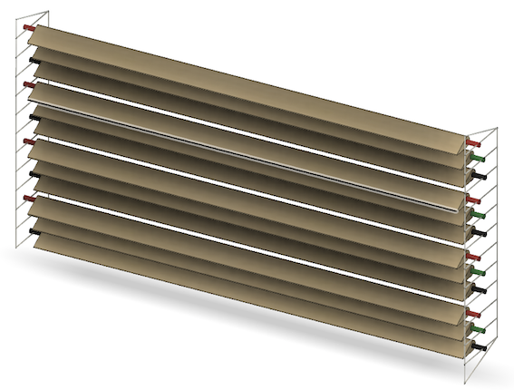
❷網の間を狭くしたパターン↓
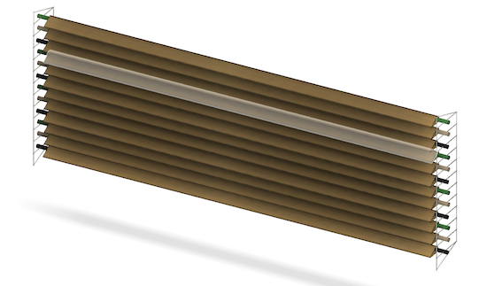
❶と❷を合わせたパターン↓
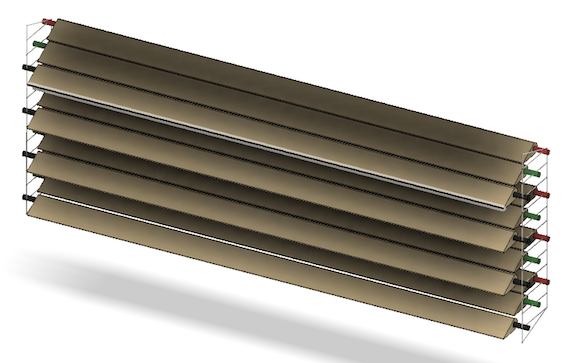
ランダムで配置したパターン↓
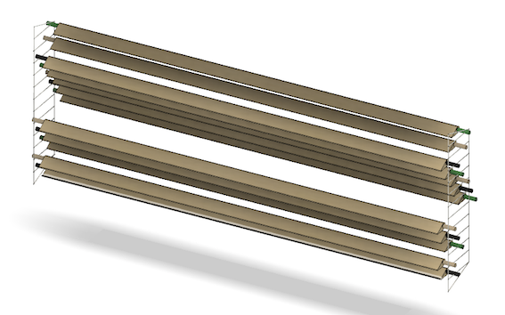
全体を薄くしたパターン↓
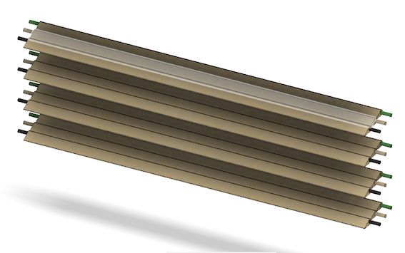
今までのものを全て並べて検証
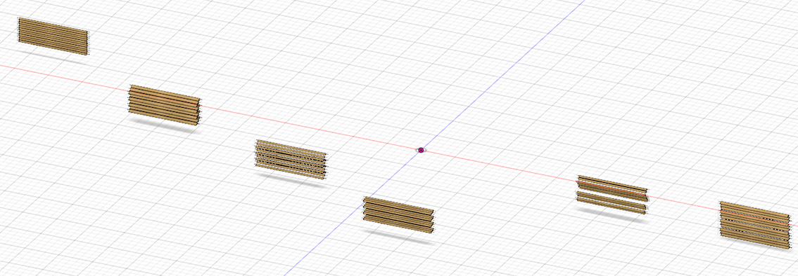
○気づき、感想○
今回１番苦戦したのは、色々なパターンを試しても光を完全に遮断することができなかったところだ。日光の角度を考えて作成してもやはり風を通すための隙間が仇となり、ある一定の角度を超えると
光が入ってきてしまう。上の図のように色々なパターンを試してみたが、画面上なので奥が見えず、
うまくいったと思ってもレールから飛び出してしまっていたりと、実際に手で触った方がやりやすいと
感じた部分もあった。
しかし新しいパターンを考えるときにどんどんコピーができることや、たくさんできたモデルを
横から眺めてどこが原因なのかを見ることができたりとCADの得意不得意を知ることができた。
結果、理想のカーテンを作ることには失敗したが、今後CADを使っていく上でどういう使い方をすれば
便利なのかを知ることができた。個人的には得るものがとても多く、ある意味成功だったと思う。
return